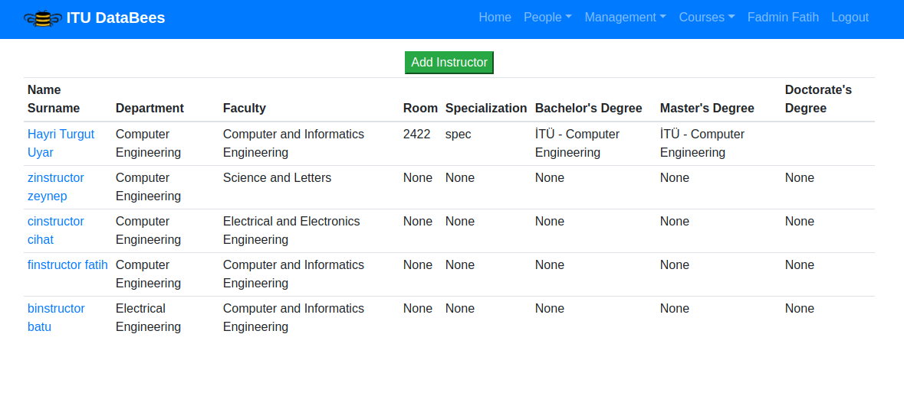
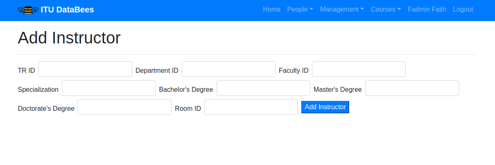
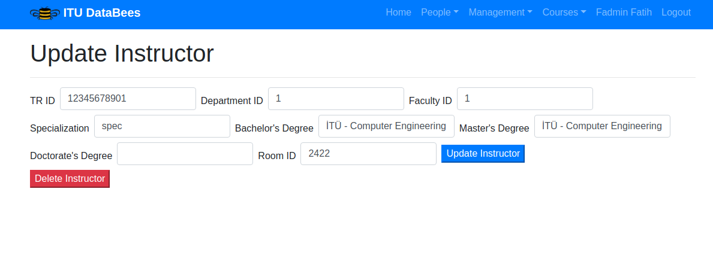
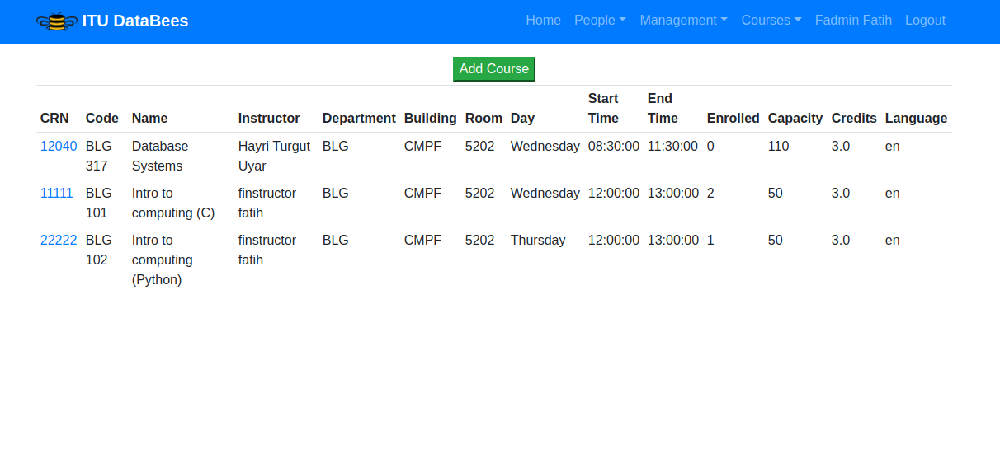

Parts Implemented by Fatih Altınpınar¶
In order to get a better understanding on the functionality of the website, parts implemented by this team member divided into sections by user the user type.
Admins¶
Instructors Page¶
In this page admins can view all the instructors currently registered in the system.
By clicking the instructor’s name and surname, admins can navigate to edit instructor page.
Add Instructorbutton will lead toAdd Instructors Pagewhich gives admins ability to register new instructors.
Instructors Page¶
Add Instructor Page¶
On this page, admin users can register instructors to system. Before this operation though, new instructor must be added in people page.
TR ID of the instructor should be provided in order to refer correct person in the
system. Department, Faculty and Room ID have to be filled in order to add an Instructor.
Information about education of the instructor are optional.
Add Instructors Page¶
Edit Instructor Page¶
On this page, admins can manipulate existent instructors’ information such as:
Change which
DepartmentandFacultyinstructor fromChange Room ID
Change external fields regarding to the instructor’s education.
Also on this page instructors can be deleted by clicking Delete Instructor button.
Edit Instructor Page¶
Courses Page¶
On this page, admins can view all courses registered to the system. When the CRN
of a course is clicked, admin can edit that course.
The page provides following data is rendered on the page for every course:
CRN
Course Code
Course Name
Instructor Name
Department which opened this course
Where and when the course take place
Enrollment status and capacity information
Credits
Language
Courses Page¶
Add Course Page¶
On this page, admins can add users by providing required data for the course:
CRN
Course code without department acronym
Full course name
Day and time information
Capacity
Credits
Language
Classroom ID, which must refer to an existent classroom in the system
Instructor ID, which must refer to an existent instructor in the system
Department ID, which must refer to an existent department in the system
General course information, learning outcome etc.
Syllabus, only pdf files are accepted.
Note
Except course information and syllabus, every field must be provided in
order to add a course.
Add Course Page¶
Edit Course Page¶
On this page, admins can manipulate following data fields of each course:
Course code without department acronym
Full course name
Day and time information
Capacity
Credits
Language
Classroom ID, which must refer to an existent classroom in the system
Instructor ID, which must refer to an existent instructor in the system
Department ID, which must refer to an existent department in the system
General course information, learning outcome etc.
Syllabus, only pdf files are accepted.
Also course can be deleted from this page by clicking the Delete Course button.
Edit Course Page¶
Course Info Page¶
Note
In this page only syllabus download link is implemented by this member. For more information about this page go to Parts Implemented By Cihat Akkiraz section of the documentation.
Every courses information can be seen on this page. Clicking download button will start downloading syllabus uploaded during creation or edition of the course The link will not appear if there is not any syllabus added to the course.
Classrooms Page¶
All of the classrooms in a faculty can be viewed under the corresponding faculty page. For more information about Faculty Page you can refer to Parts Implemented By Cihat Akkiraz section of the documentation.
Classrooms Page¶
Add Classroom Page¶
On this page, admins can add users by providing required data for the course:
Capacity
Door Mumber
Floor
Board Count
Does classroom have projection system built in?
Is classed renewed?
Does classroom have air conditioning?
Add Classroom Page¶
Edit Classroom Page¶
On this page, admins can manipulate following data fields of each course:
Capacity
Door Mumber
Floor
Board Count
Does classroom have projection system built in?
Is classed renewed?
Does classroom have air conditioning?
Also the classroom can be deleted from this page by clicking the Delete Classroom button.
Edit Classroom Page¶
Instructors¶
Instructors does not have many functionality in the system. They can only view the courses taught by them and do grading operations.
My Courses¶
Instructors can view courses they teach under My Courses page. By clicking CRN of a lecture
an instructor can navigate to course info page of a course. Here, if they are the instructor of
the course that is being viewed; they have the ability to view student lists and give grades to each student.
For more information about Course Info page refer to Parts Implemented By Cihat Akkiraz part of the documentation.

My Courses Page¶
Students¶
Add/Drop Courses¶
On this page, students can add/drop courses by filling form with course `CRN`s. The system will automatically check for timing conflicts between courses student is trying to take and courses student already took.
Student Trying to Add Courses¶
Student Trying to Drop Courses¶